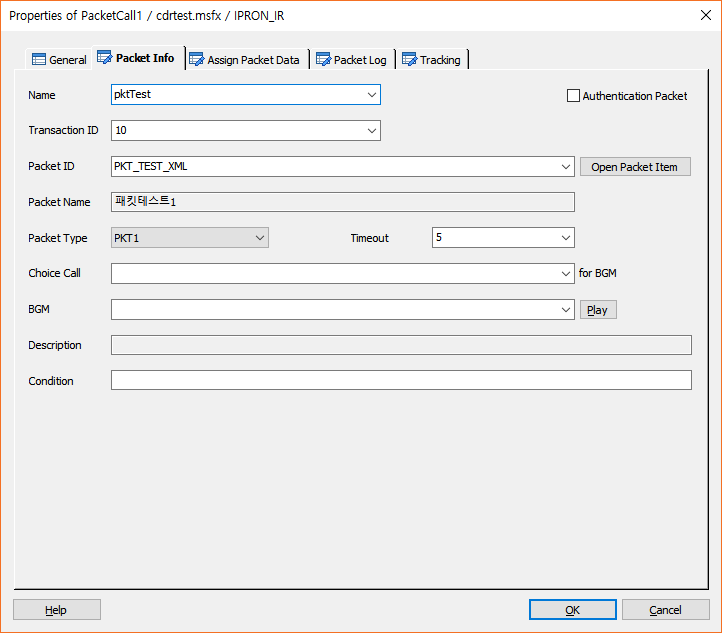
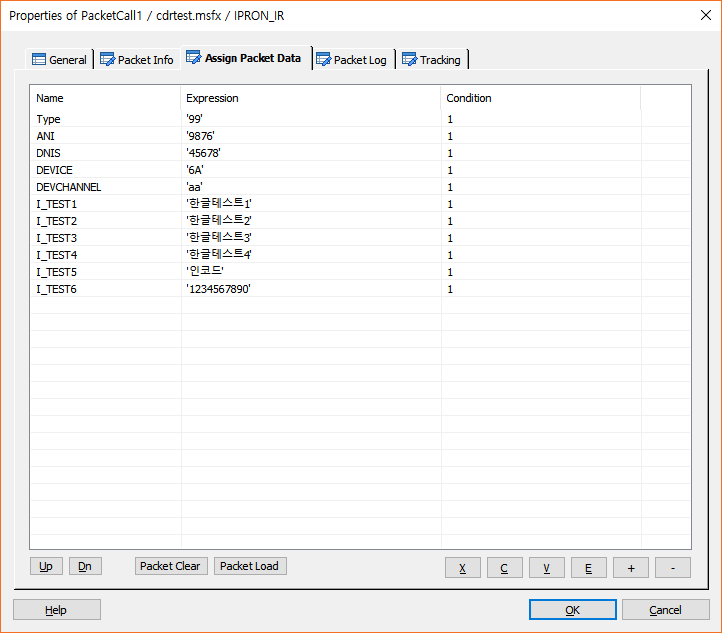
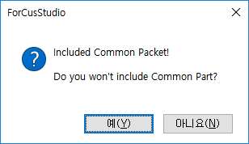
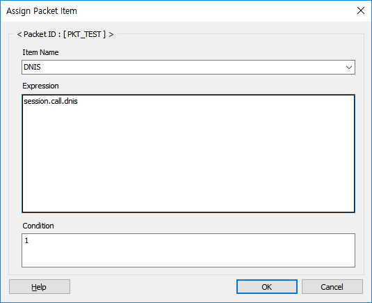
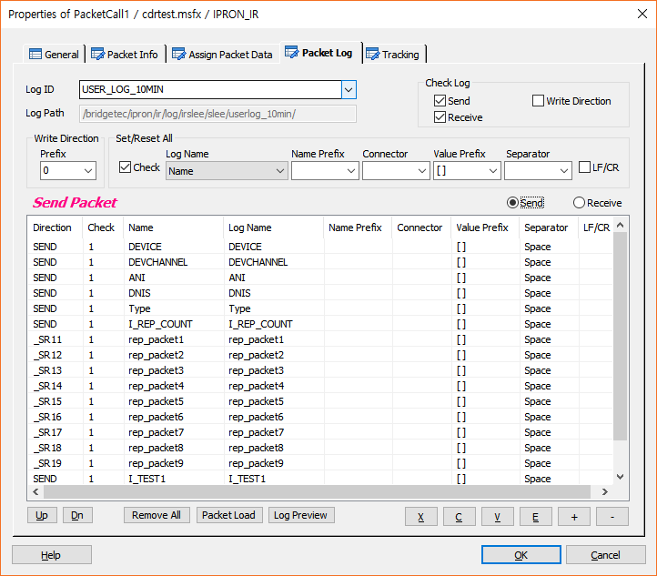
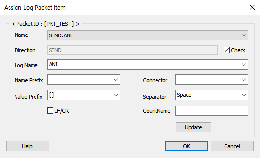
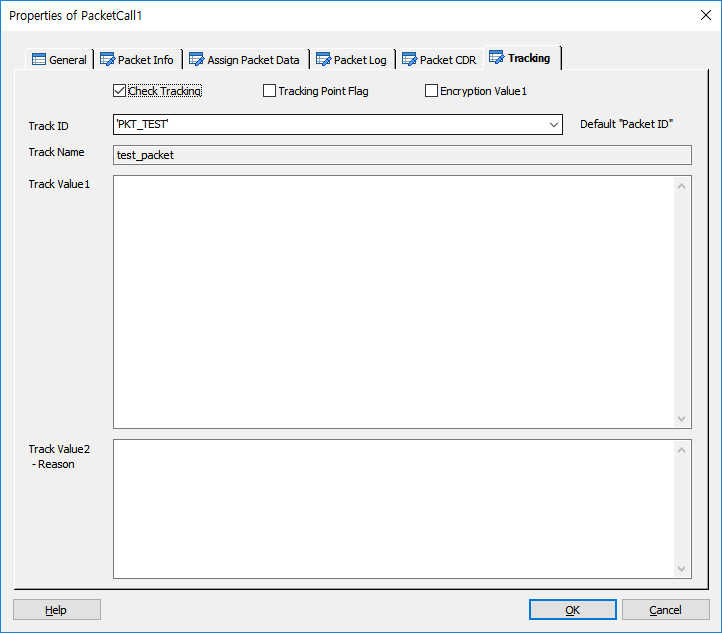

DefinePacket Item 에 정의된 전문을 호출하여 해당 Host 로 전송 하는 기능을 지원 합니다.
전문 통신은 CI(Communication Interface) 를 통해서 TB(Transaction Bridge) 와 연결되어 처리 됩니다. 실제 통신은 TB와 실제 호스트 사이에 로직을 처리하는 Interface Adapter 를 두고 처리하거나 TB 에서 직접 실제 호스트에 연결 하는 방식 중에 선택하여 처리 할 수 있습니다.
ICON
PROPERTIES
 Packet Info
Packet Info

Name : 아이템의 이름을 지정 합니다. 지정된 이름은 Packet 처리를 위한 변수에 접근 할 때 사용 합니다.
Authentication Packet Check Box : 인증전문을 보냅니다. 태그는 <authpacket> ~ <authresult/> </authpacket> 입니다.
Transaction ID : TB 에서 전문을 전송할 대상(adapter/host)을 찾기 위한 서버 키 입니다.
Packet ID : DefinePacket Item으로 정의된 Packet ID를 선택 합니다.(Packet ID 선택하면 Packet Name을 가져와 설정하고, Packet ID, Packet Name을 Tracking 탭의 Track ID, Track Name에 설정합니다.)
Packet Name : DefinePacket에 설정된 Packet Name을 지정 합니다.
Open Packet Item Button : Packet ID 에 설정한 정의된 전문 아이템으로 이동 합니다.(DefinePacket Item)
Packet Type : 현재는 PKT1 Type 만 제공 합니다.
Timeout : 전문 전송 시 대기 시간을 지정 합니다.(second 단위)
Choice Call(for BGM) : Multi Call 에서 콜을 선택 합니다.(2개 콜 까지 가능, GetChannel 로 생성)
BGM : 전문 전송 시 Delay 가 발생 할 수 있으므로 배경 음악을 지정 하여 전문 전송 중 재생 합니다.
Play Button : BGM에 설정된 멘트를 Play합니다.
Description : BGM 으로 지정된 멘트의 설명이 있으면 표시 합니다.
Condition : 아이템의 수행 조건을 지정 합니다.
 Assign Packet Data
Assign Packet Data

Up Button : 선택한 전문 필드를 위로 이동 합니다.
Dn Button : 선택한 전문 필드를 아래로 이동 합니다.
Packet Clear Button : Packet Load Button은 이전에 설정된 데이터를 보호하는 기능이 있는데, Name이 같은 경우 Expression에 전에 값이 있었다면 실제 DefinePacket에 Default부분이 바뀌어도 이전에 설정된 값을 유지 하기 때문에, 이전 값을 사용하지 않고 초기화 하는 경우에 사용하는 버튼입니다.
Packet Load Button : Packet Info Tab 의 Packet ID 에 지정한 정의된 전문(DefinePacket Item) 의 전문 필드를 가져옵니다. 전문이 정의된 공동 전문을 포함하고 있는 경우 공통 전문 필드도 가져올 것인지를 묻는 창을 팝업 합니다. Packet ID 에 전문이 지정 되어 있지 않으면 동작 하지 않습니다. 정의된 전문에 Default부분에 값이 있을 경우 이 값을 Expression필드에 자동으로 넣어주는데, Default항목 자체는 Expression처리를 하지 못하는 항목이므로 실제 필드 타입과 Default부분의 값이 정확히 입력되지 않을 수 있다.(문자, 숫자, 변수구분 안됨)

X Button : 선택한 리스트를 잘라냅니다.(Ctrl+X)
C Button : 선택한 리스트의 내용을 복사 합니다.(Ctrl+C)
V Button : 복사한 리스트의 내용을 붙여넣기 합니다.(Ctrl+V)
E Button : 선택한 전문 필드의 내용을 수정 합니다.
+ Button : 전문 필드 하나를 추가 합니다.(Packet Info Tab 의 Packet ID 에 지정한 정의된 전문에 포함된 필드)
- Button : 선택한 전문 필드를 삭제 합니다.

♣ Packet Info Tab 의 Packet ID 에 전문이 지정 되면 화면에 지정된 Packet ID가 표시 됩니다.(<Packet ID : [PKT_TEST] >)
Item Name : 전문 필드를 선택 합니다.(Packet Info Tab 의 Packet ID 에 전문이 지정 되어 있으면 포함된 필드 리스트가 제공 됩니다. 필드 리스트는 common, sendpart, receivepart 라는 prefix 문자가 붙어서 각 필드가 속한 part 를 표시 합니다.)
Length : 전문 필드 사이즈 표시
Expression : 전문 필드에 값을 설정 합니다.
Condition : 전문 필드에 값 할당 조건을 지정 합니다.
 Packet Log
Packet Log

Log ID : 로그를 출력할 DefineLog 에 정의한 Log ID를 지정 합니다.
Log Path : 지정한 Log ID 에 정의된 Log Path 를 표시 합니다.
Check Log
Send Check Box : 체크하면 보내는 전문 로그를 출력합니다.
Receive Check Box : 체크하면 받은 전문 로그를 출력합니다.
Write Direction : 체크하면 로그 출력 전문 송신/수신 표시 로그를 출력 합니다.
Write Direction
Prefix : 전문 송신/수신 표시 로그 출력 시 앞 뒤에 붙는 문자를 선택 합니다.( [ ], { }, ( ), < > )
Set/Reset All (해당 되는 전문 모든 필드에 대한 설정/설정해제)
Check Box : 전문 필드 로그 기록 유무를 체크를 합니다.
Log Name : 로그 출력 시 표시 되는 필드 이름을 설정합니다. Name(전문 필드 이름으로 모두 설정)
Name Prefix : 전문 필드가 출력 될 때 앞 뒤에 붙는 문자를 설정 합니다.( [ ], { }, ( ), < > )
Connector : 전문 필드와 값을 설정한 값으로 연결 합니다.( :, =, / )
Value Prefix : 전문 필드에 대한 값을 출력 할 때 앞 뒤에 붙는 문자를 설정 합니다.( [ ], { }, ( ), < > )
Separator : 전문 필드와 필드 사이를 구분하는 문자를 설정 합니다.( Space, 코마, |, ; )
LF/CR Check Box : 체크하면 체크된 필드 까지 출력되고 다음 필드는 다음 줄에 출력 됩니다.
Send Option Box : 전송 전문 필드 리스트를 봅니다.
Receive Option Box : 수신 전문 필드 리스트를 봅니다.
• 전문 필드 리스트
Direction : 송신/수신 구분
SEND : 보내는 전문
RECV : 받은 전문
CSND : 공통 보내는 전문
CRCV : 공통 받은 전문
_SRxn : 보내는 전문 반복, ex) _SR11(첫 번째 보내는 전문 반복의 1번 필드), _SR12(첫 번째 보내는 전문 반복의 2번 필드)
_RRxn : 받은 전문 반복, ex) _RR11(첫 번째 받은 전문 반복의 1번 필드), _RR12(첫 번째 받은 전문 반복의 2번 필드)
_CSRxn : 공통 보내는 전문 반복, ex) _CSR11, _CSR12, .. _CSR21, ..
_CRRxn : 공통 받은 전문 반복, ex) _CRR11, _CRR12, .. _CRR21, ..
_CRxn : 공통 전문 반복, ex) _CR11, _CR12, .. _CR21, ..
Check : 해당 전문 필드 로그 기록 유무
Name : 전문 필드 이름
Log Name : 여기에 값이 설정 되어 있으면 Name대신 여기 설정한 값이 로그에 출력
Name Prefix : 전문 필드 이름 앞 뒤로 붙는 문자
Connector : 전문 필드와 값을 연결하는 문자
Value Prefix : 전문 값의 앞 뒤로 붙는 문자
Separator : 전문 필드와 필드를 구분하는 문자
LF/CR : 로그 기록 시 줄 바꿈 필드 지정
Up Button : 전문 필드 리스트에서 선택한 필드를 위로 이동합니다.
Up Button : 전문 필드 리스트에서 선택한 필드를 아래로 이동합니다.
Remove All Button : 전문 필드 리스트를 모두 제거 합니다.
Packet Load Button : Packet Info탭의 Packet ID에 설정한 전문을 로드하여 리스팅 합니다.
Log Preview Button : 설정한 로그의 내용을 미리보기 합니다.
X Button : 선택한 리스트를 잘라냅니다.(Ctrl+X)
C Button : 선택한 리스트의 내용을 복사 합니다.(Ctrl+C)
V Button : 복사한 리스트의 내용을 붙여넣기 합니다.(Ctrl+V)
E Button : 선택한 전문 필드의 정보를 수정 합니다. 리스트에서 라이브러리를 마우스 더블 클릭 해도 됩니다.(수정 창 팝업)

+ Button : 전문 필드를 추가합니다.(추가 창 팝업)
- Button : 선택한 전문 필드를 리스트에서 제거 합니다.
 Tracking
Tracking

전문 처리에 대한 트래킹을 처리합니다.
Check Tracking Check Box : Tracking을 사용 할 것인지를 체크합니다.
Tracking Point Flag Check Box : 특별한 Tracking Flag를 설정하여 SWAT에서 트래킹 시에 이 플래그가 설정된 항목만 트래킹 할 수 있습니다.
Encryption Value1 Check Box : Track Value1 속성 데이터에 대해서 암호화 처리를 합니다.
Track ID : 정의한 Track ID를 선택합니다.
- DefineTrack Item에 정의된 Track ID가 콤보박스 리스트로 제공됩니다.(Type이 없거나, Packet인 경우)
* 기본으로 Packet ID가 설정됩니다.
Track Name : Track ID를 선택하면 같이 정의된 이름을 출력합니다.(SWAT에서 이 이름으로 트랙킹 시에 사용합니다.)
Track Value1 : 트래킹 시에 사용할 값을 입력 합니다.
Track Value2 :트래킹 시에 사용할 값을 입력 합니다.(결과에 대한 Reason값)
RESULT
· 처리 결과 세션 변수
session.command.result : 처리 성공(_SLEE_SUCCESS_), 실패(_SLEE_FAILED_)
session.command.reason : 실패면 실패 오류코드(시스템 상수 참조)
· 아이템 속성 변수(@name은 Name항목에서 지정한 이름)
@name.receivedsize : 수신한 전문 데이터 사이즈
@name.repeatcount : 전문에 포함된 Repeat 부분 개수
@name.repeat_number : 수신 전문 분석 완료 시, 마지막으로 처리한 Repeat 부분의 레코드 위치(행 번호)
@name.repeat_item : 수신 전문 분석 완료 시, 마지막으로 처리한 Repeat 부분의 레코드 위치 에서의 컬럼 위치(열번호)
@name.to.전문항목명 : 전문을 보낼 때, 전문 항목을 채우기 위한 변수명
@name.to.전문항목명[XX] : Repeat 부분을 포함하는 전문 송신 전 Repeat 항목을 접근 하기위한 방법, XX(Repeat 레코드 인덱스, 1 base)
@name.from.전문항목명 : 전문을 수신한 후, 전문 항목의 값을 얻기 위한 변수명
@name.from.전문항목명[XX] : Repeat 부분을 포함하는 전문 수신 후 Repeat 항목을 접근 하기위한 방법, XX(Repeat 레코드 인덱스, 1 base)
@name.sendpartsize : 반복 부를 제외한 정의된 보내는 전문 사이즈 (공통 전문 사이즈 포함)
@name.sendrepeatsize[XX] : 반복 부별 정의된 보내는 전문 사이즈(반복 부는 9개 까지 지원), XX(repeat 카운트 인덱스, 1 base)
@name.receivepartsize : 반복 부를 제외한 정의된 받는 전문 사이즈 (공통 전문 사이즈 포함)
@name.receiverepeatsize[XX] : 반복 부별 정의된 받는 전문 사이즈(반복 부는 9개 까지 지원), XX(repeat 카운트 인덱스, 1 base)
@name.trkey : Transaction Key 로 PacketCall 을 호출 할 때 마다 발생하는 키.
@name.senddata : 전송 전문 데이터.
@name.receiveddata : 수신 전문 데이터.
RELATED